1과목: 비행상담
1. 소년법상 소년부의 보호사건으로 심리하는 대상이 아닌 자는?
2. 청소년 폭력비행의 특징으로 옳은 것은?
3. 지위비행에 해당하지 않는 것은?
4. 보호처분에 관한 설명으로 옳지 않은 것은?
5. 변화의지가 없으며 상담에 비협조적인 비행청소년을 상담할 때 상담자의 전략으로 옳지 않은 것은?
6. 비행청소년이 행동화(acting out)할 가능성이 가장 높은 MMPI 프로파일은?
7. 비행청소년 심리평가 시 사용할 수 있는 투사적 검사는?
8. 헤어(Hare)이론에 관한 설명으로 옳은 것을 모두 고른 것은?
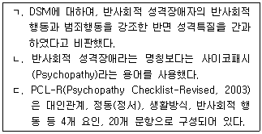
9. 비행청소년의 상담을 위한 평가내용으로 옳지 않은 것은?
10. 청소년비행에 관한 설명으로 옳은 것은?
11. 위험성 평가와 관련된 용어에 관한 설명으로 옳은 것을 모두 고른 것은?
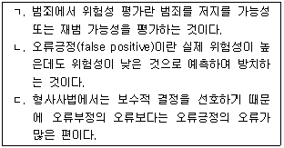
12. 비행청소년의 부모상담시 상담자 태도로 옳은 것은?
13. 비자발적인 완득이를 처음 상담할 때 상담자의 태도로 옳은 것을 모두 고른 것은?
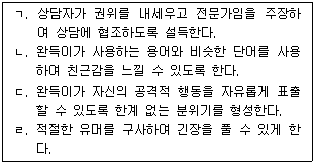
14. 청소년 비행예방을 위한 지역사회 기반 프로그램의 예로 옳은 것은?
15. 사이버시대가 청소년 성범죄에 미치는 영향으로 옳은 것을 모두 고른 것은?
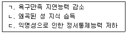
16. 학교폭력 가해자의 성격적 특성으로 옳지 않은 것은?
17. 인터넷 중독에 관한 설명으로 옳은 것을 모두 고른 것은?
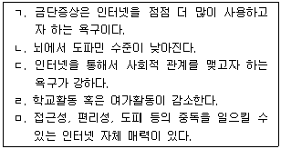
18. 청소년 재산비행에 관한 설명으로 옳은 것을 모두 고른 것은?
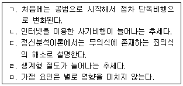
19. 애그뉴(Agnew)의 일반긴장이론에서 비행의 원인으로 옳은 것은?
20. 청소년 비행에 관한 억제이론의 설명으로 옳은 것은?
21. 학교폭력 예방 및 대책에 관한 법률의 용어 설명으로 옳지 않은 것은?
22. 다음은 무엇에 관한 설명인가?
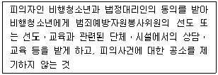
23. 허쉬(Hirschi)의 사회유대이론의 개념에 관한 설명으로 옳지 않은 것은?
24. 안나 프로이트(Anna Freud)의 방어이론에서 설명하는 청소년기에 관한 설명으로 옳은 것은?
25. 비행에 관한 낙인이론의 설명으로 옳지 않은 것은?
26. 공격성이 높은 청소년들에게 나타날 수 있는 신경생리학적 특징에 관한 설명으로 옳은 것은?
27. 소년법상 비행청소년의 심판에 관한 설명으로 옳지 않은 것은?
28. 마치(Matza)와 사이크스(Sykes)의 중화기술에 관한 설명으로 옳은 것을 모두 고른 것은?
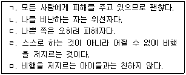
29. 삶에 대한 불안, 존재의 두려움이 비행을 일으킨다고 설명한 이론은?
30. '학교폭력 없는 행복한 학교'를 위한 정부의 정책에 해당하는 것을 모두 고른 것은?
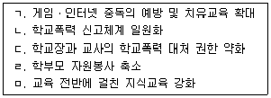
2과목: 성상담
31. 성 역할에 관한 설명으로 옳지 않은 것은?
32. 다음은 어떤 상담기법에 관한 설명인가?
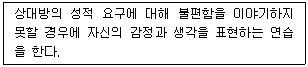
33. 피임기구를 이용한 피임법을 모두 고른 것은?
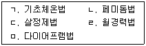
34. 임신하면 태아가 자궁에 착상하도록 돕는 여성호르몬은?
35. 매독에 관한 설명으로 옳은 것은?
36. 남녀의 내ㆍ외부 성 기관의 연결로 옳지 않은 것은?
37. 아동ㆍ청소년의 성보호에 관한 법률상 직무 중에 아동ㆍ청소년 대상 성범죄 발견 시 신고에 관한 사항으로 옳은 것은?
38. 성폭력 피해 청소년과의 상담을 종결할 때 고려해야 할 사항으로 옳지 않은 것은?
39. 인터넷상 유해한 성 정보로부터 청소년을 보호하기 위한 조치로 옳지 않은 것은?
40. 청소년기의 바람직한 성 행동으로 옳지 않은 것은?
41. 강간 피해 직후 내방한 내담자 상담에서 적절한 조치를 모두 고른 것은?
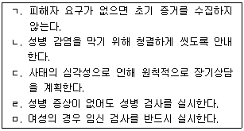
42. 남녀의 성 반응에 관한 설명으로 옳지 않은 것은?
43. 다음과 같은 청소년 내담자의 호소에 대한 상담자의 반응으로 옳지 않은 것은?
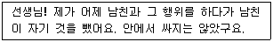
44. 사춘기 성 발달에 관한 설명으로 옳은 것은?
45. 성폭력 상담자가 가져야 할 인식으로 옳은 것을 모두 고른 것은?
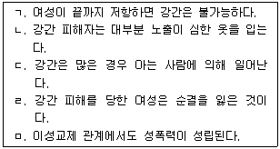
46. 성역할 획득에 관한 각 이론의 설명으로 옳지 않은 것은?
47. 청소년 성교육 내용에 해당하지 않는 것은?
48. 성폭력 피해자 상담의 초기단계 지침으로 옳지 않은 것은?
49. 성도착증에 관한 설명으로 옳은 것은?
50. 데이트 성폭력 예방을 위한 교육ㆍ훈련으로 옳지 않은 것은?
51. 자위에 관한 설명으로 옳지 않은 것은?
52. 월경전증후군에 관한 설명으로 옳은 것을 모두 고른 것은?
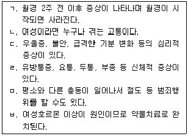
53. 스토킹 피해시 대처법으로 옳지 않은 것은?
54. 성적 고정관념에 관한 설명으로 옳은 것은?
55. 성과 관련된 역사적 사건의 영향에 관한 설명으로 옳은 것은?
56. 성에 관한 각 분야, 이론의 설명으로 옳지 않은 것은?
57. 청소년 성매매의 한 유형인 '원조교제'에 관한 설명으로 옳은 것을 모두 고른 것은?
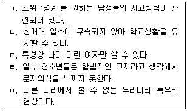
58. 자신이 동성애자인지 혼란스러워 하는 청소년 상담의 개입으로 옳지 않은 것은?
59. 성폭력 가해자가 보이는 인지왜곡에 해당하는 것을 모두 고른 것은?
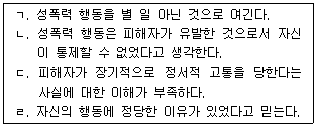
60. 스턴버그(Sternberg)의 사랑의 삼각형 이론에 관한 설명으로 옳은 것은?
3과목: 약물상담
61. 중추신경억제제로 작용하는 약물만으로 묶인 것은?
62. 약물중독자의 가족치료 기법으로서 다음 내용을 강조하고 있는 것은?
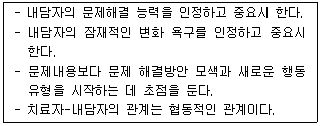
63. 약물중독을 행동의 문제로 보고 새로운 대처기술과 인지적 전략을 습득하면 문제행동에 대한 통제와 관리가 가능하다고 주장하는 치료모델은?
64. 치료 공동체(TC)에 관한 설명으로 옳은 것을 모두 고른 것은?
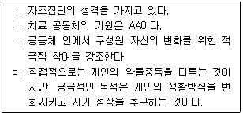
65. 약물중독 재활에서 사례관리의 목적을 달성하기 위한 원칙으로 옳지 않은 것은?
66. 다나(Dana)와 블레벤스(Blevens)가 약물남용자의 상담에 필요하다고 제시한 지침을 모두 고른 것은?
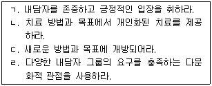
67. 약물남용 치료서비스 중 내담자의 다음 조건에 적합한 치료는?
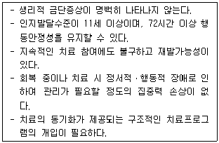
68. 약물중독자의 상담초기 과정에서 다루어야 할 내용으로 옳지 않은 것은?
69. 이중진단을 가진 내담자를 치료하는 방법으로 다음의 특징을 가지는 치료모델은?
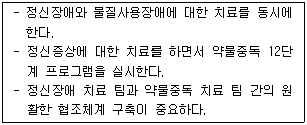
70. 헤로인 금단증상이 아닌 것은?
71. 중독가족 상담에서 가족 개입의 주요 목표가 아닌 것은?
72. 환각제로 분류할 수 있는 약물을 모두 고른 것은?
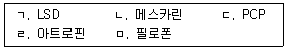
73. 롤닉(Rollnick)의 동기강화상담에서 상담자가 갖추어야 할 태도로 옳지 않은 것은?
74. 약물중독 상담에서 집단상담 대상자로 적합하지 않은 것은?
75. 학교기반 약물남용 예방프로그램인 약물남용 자각 및 저항 프로그램(DARE)에 관한 설명으로 옳지 않은 것은?
76. 브라운(Brown)의 알코올중독 분류 유형 중에서 생활 스트레스를 풀기 위해 마시며, 금단증상 및 조절력 상실은 없고 갈망 등이 나타나는 유형은?
77. 다음은 프로차스카(Prochaska)와 디클레멘트(DiClemente)가 제시한 변화단계 중 어느 단계에 해당하는가?
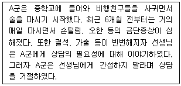
78. 약물사용 가능성이 높은 청소년의 특성이 아닌 것은?
79. 청소년 약물사용의 특징에 관한 설명으로 옳은 것은?
80. 담배갑 경고문구에 관련된 법률에 관한 설명으로 옳은 것을 모두 고른 것은?
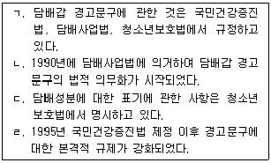
81. 약물관련 개념에 관한 설명으로 옳지 않은 것은?
82. 다음의 특징을 보이는 청소년은 존슨(Johnson)의 약물중독 단계 중 어느 단계에 해당하는가?
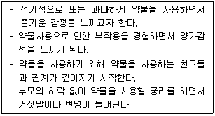
83. 강성약물이 아닌 것은?
84. 다음 사례는 알코올중독 가정의 자녀 유형 중 어느 유형에 속하는가?
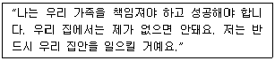
85. 다음은 무엇에 관한 설명인가?
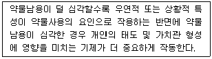
86. 청소년 음주예방 정책 중 주류에 대한 접근성 감소정책에 해당하는 것을 모두 고른 것은?
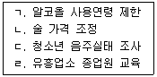
87. 약물남용의 원인에 관한 이론적 설명으로 옳지 않은 것은?
88. 청소년 약물남용 예방에 관한 설명으로 옳지 않은 것은?
89. 청소년 약물남용에 영향을 미치는 사회학적 요인으로 나열된 것은?
90. 약물남용 선별에 관한 설명으로 옳지 않은 것은?
4과목: 위기상담
91. 급성 스트레스 장애 진단을 위한 기준이 아닌 것은?
92. 위기반응에 관한 설명으로 옳지 않은 것은?
93. 다음은 영(Young)이 제시한 인터넷 중독의 유형 중 어느 유형에 속하는가?
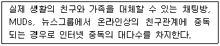
94. 위기 아동ㆍ청소년 부모의 특징으로 옳은 것을 모두 고른 것은?
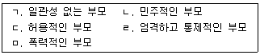
95. 대인관계이론에 관한 설명으로 옳지 않은 것은?
96. 다음은 어떤 유형의 위기에 해당하는가?
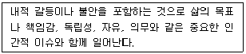
97. 위기평가에 관한 설명으로 옳지 않은 것은?
98. 위기상담의 원리로 옳지 않은 것은?
99. 청소년 위기 개입의 기본 목표가 아닌 것은?
100. 위기에 따른 단계적 반응을 순서대로 옳게 나열한 것은?
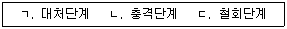
101. 청소년 위기개입의 단계를 순서대로 옳게 나열한 것은?
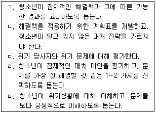
102. 청소년 위기상담에 관한 설명으로 옳은 것을 모두 고른 것은?
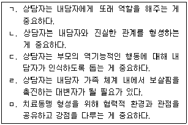
103. 심리적 외상에 관한 설명으로 옳지 않은 것은?
104. 학교폭력 위기상담의 특징에 관한 설명으로 옳지 않은 것은?
1⑤. 위기에 처한 청소년의 스트레스 반응으로 옳지 않은 것은?
106. 다음은 무엇에 관한 설명인가?
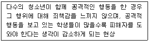
107. 학교폭력 현상의 특징으로 옳지 않은 것은?
108. 청소년 자살의 특징으로 옳은 것은?
109. 학교폭력에 관한 설명으로 옳지 않은 것은?
110. 자살의 미디어 보도에 관한 보건복지부 권고사항으로 옳지 않은 것은?
111. 자살 사고를 가진 청소년 상담에 관한 설명으로 옳지 않은 것은?
112. 라이트(Wright)의 이혼단계에서 부부가 서로의 문제를 더 이상 함께 대처할 수 없을 때 함께 있는 것이 더 큰 문제라고 인식하는 단계는?
113. 자살 위기 개입단계에서 필요한 상담 지침으로 옳지 않은 것은?
114. 학교폭력과 관련된 신경전달물질에 관한 다음 설명에서 ( )안에 들어갈 물질을 순서대로 옳게 나열한 것은?
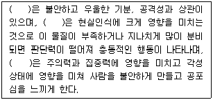
115. 파벨로우(Farbelow)의 전화 자살위기개입의 단계로 옳은 것은?
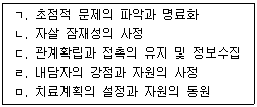
116. 이혼가정 청소년의 심리적ㆍ정서적 위기를 극복하기 위한 과제로 옳지 않은 것은?
117. 다음에서 설명하고 있는 위기개입 기법은?
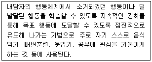
118. 시프네오스(Sifneos)의 단기불안야기치료를 위한 내담자의 조건으로 옳지 않은 것은?
119. 위기개입 상담시 질문의 지침으로 옳지 않은 것은?
120. 길리랜드(Gilliland)의 위기개입 6단계는 크게 경청(listening)과 활동(acting)으로 구분된다. 다음 중 활동의 영역을 모두 고른 것은?
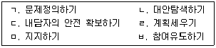